Solve Exponents Section Manual
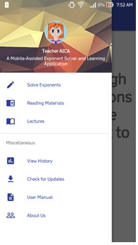
Go to the Navigation Menu
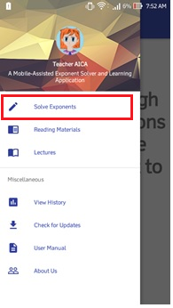
after you tap the Navigation Menu,
tap "Solve Exponents"
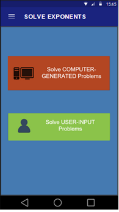
after you tap the Solve Exponent, mode menu will appear.
the "solve Computer generated Problem" and "solve User-Input problems"
and choose one of them.
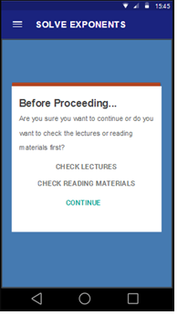
if you choose "solve Computer generated problem"
before you prceed, there are three choices will promt up.
if you want to check the lectures, tap "CHECK LECTURES"
if you want to check the reading materials, tap "CHECK THE READING MATERIALS"
and if you don't want to check the two, tap "CONTINUE" to proceed to the solving problem
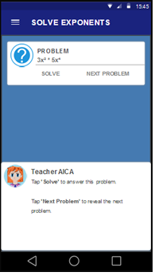
after you tap CONTINUE, you will proceed now to the PROBLEM SET
follow the instruction that give Teacher AICA in below corner
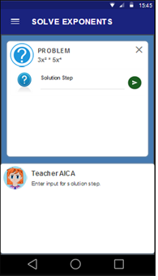
after you tap "solve" button, you will proceed at this section.
in this section, you will now solve the given exponent equation.
you provide now your solution in the "solution step"
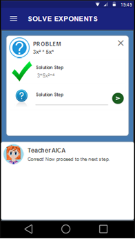
in this screen will tell you if your answer is correct
and teacher AICA will tell you that you are correct
and you may now proceed to the next step
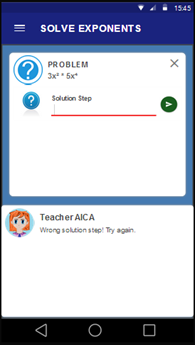
and if your answer is wrong, this is will apear in your screen
and teacher AICA will tell you that you are wrong
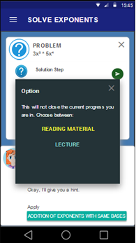
if you are wrong in thrice, teacher AICA will provide the Hint
there two type of hint, READING MATERIAL option and LECTURE option
in READING MATERIAL, teacher AICA will lead you at the reading materials based on the question you didn't know
in LECTURE, teacher AICA will lead you at the lecture based on the question you didn't know
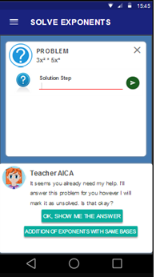
If you committed five times wrong input, Teacher AICA will show the answer option
but teacher AICA warns you forfeiture in solving the problem which will reflect on your performance

After you tap the "OK, SHOW ME THE ANSWER"
this is will apear to your screen, it's show the answer step by step
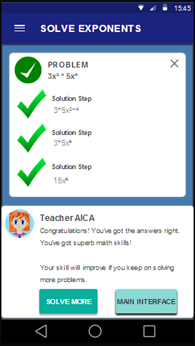
But if you are correct, this is will apear to your screen that the problem is SOLVED
and you may now proceed to "SOLVE MORE" button.
to solve more exponents questions, you will be enhance your skills in solving EXPONENTS
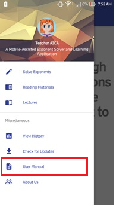
If you want to know the "READING MATERIALS" and "LECTURE",
Just go back to navigation and tap the READING MATERIALS or LECTURES
but first you must read first the "User Manual" and choose either Reading Materials or Lecture to guid you how to use it.
"GOOD LUCK AND HAPPY SOLVING"